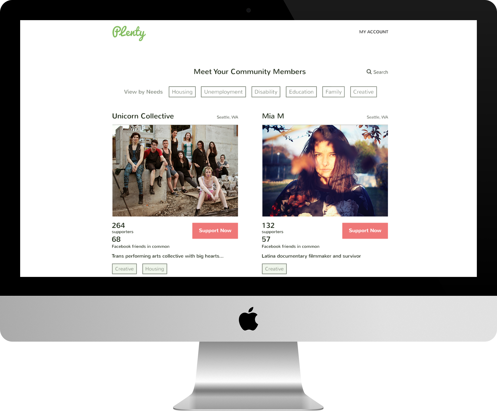
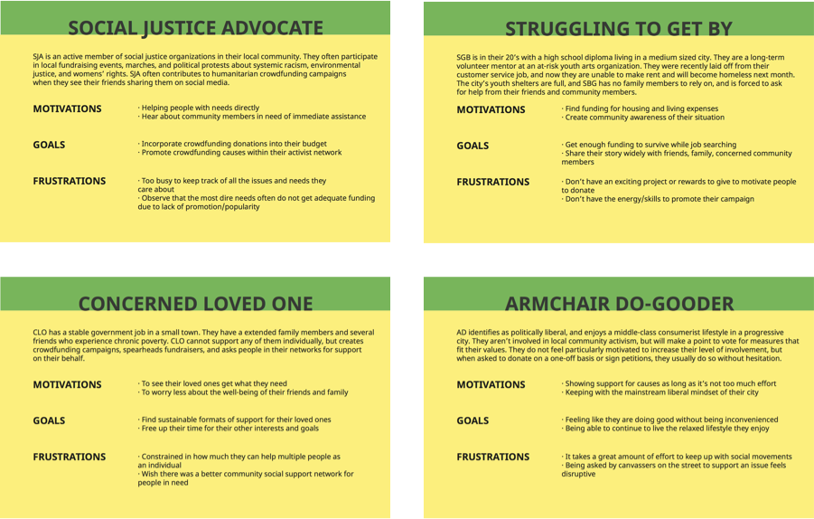
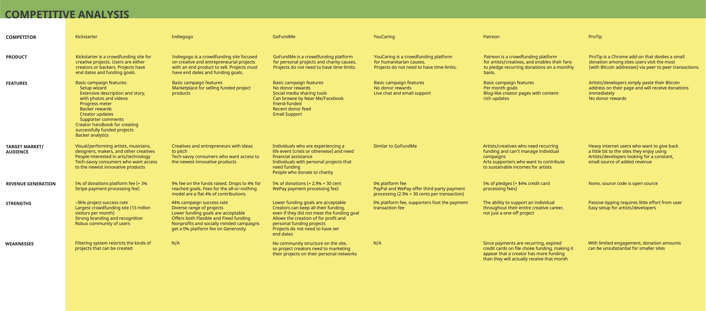
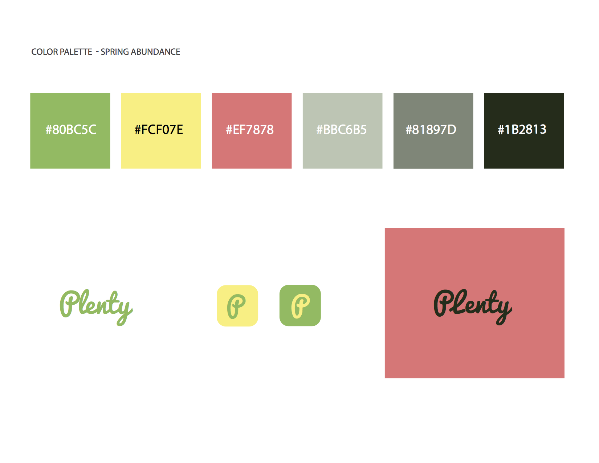
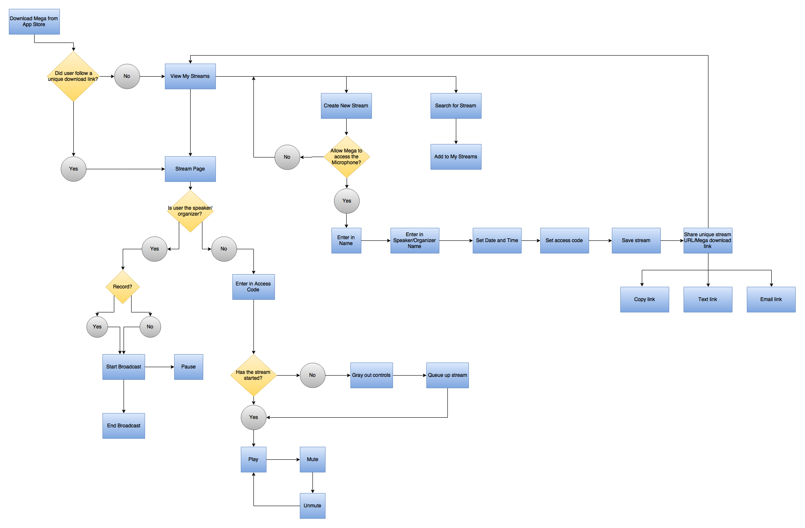
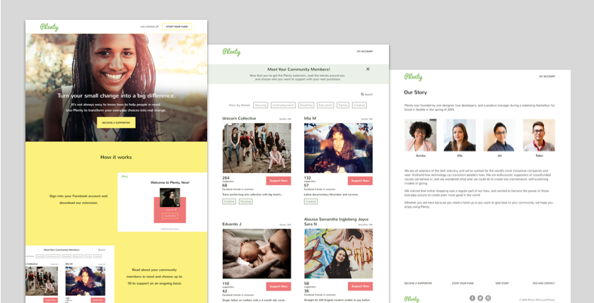

Plenty is a 100% fee-free crowdfunding website that allows users to round up their online purchases to help other people in need. The app’s model is generating passive good by hitching onto existing user behaviors of online shopping. I envision Plenty to be positive tool for deeper connection between community members and to evolve communities of generosity.
Supporters install the Plenty browser extension, read about and choose to support up to 10 struggling community members. The extension detects each time supporters make an online purchase and prompts users to round up their purchase amounts and donate their change. Community members in need of financial support can sign up for free to receive donations immediately.
I created a user survey and recruited a variety of respondents including people who donate to crowdfunding sites, run crowdfunding campaigns or care about humanitarian issues. I asked about experiences using crowdfunding sites, what they liked/disliked, and how they discovered campaigns.
Most respondents had donated to crowdfunding campaigns before. The main impetus was feeling compassion towards the individual/group in need. Most people donated to social justice and arts causes and usually found out about campaigns via social media. For respondents who created campaigns, they wished it was easier to setup and manage their fundraiser. They were often struggling with time and financial constraints that led them to create the campaign in the first place. I also conducted a competitive analysis of popular crowdfunding sites.
From this data, I extracted four unique user personas: Social Justice Advocate, Concerned Loved One, Struggling to Get By, and Armchair Do-Gooder.
 View User Personas (PDF)  View Competitive Analysis (PDF)Since this is a site that is essentially asking people to give away their money, I created a brand feeling of abundance and hope. For Plenty’s color palette, I chose soft tones that reminded me of spring and new beginnings.
The app's name Plenty reminds users of their generosity and that there is plenty to go around. I selected a clean logotype in a playful script handwriting font.
The goal of Plenty is to help people help others. I bypassed features that delayed support, such as saving or favoriting a community member without pledging to support them, or passing along payment fees to supporters.
For supporters, I minimized the amount of work it takes to start supporting someone. Plenty is five steps: Create a Plenty account, download the extension, read stories, choose community members to support, add payment information and carry on with regular internet browsing. Donating change via Plenty is an effortless addition to regular online shopping habits. Users may also opt out at anytime.
 View User Flow (PDF)For community members to receive funds, they simply create an account, create a profile, and promote their story online. I purposefully made the profile a single page so that users would find it straightforward. To foster empathy in potential supporters, the blank profile form contains tips on how to write a credible and powerful story requesting help.
View Wireframe PrototypeWhen users interacted with my prototype, I received a large amount of enthusiastic feedback. The prototype used familiar desktop design patterns, such as expansive background images, large buttons, and flat form elements. All users were able to quickly click through each of the intended flows. Users asked that I add a thank you pop up after clicking to support someone. Another suggestion was to add a top navigation bar on the home page with links to lower sections in the page.
As a designer, I need be able to discern types of feedback so that I stay within the scope of my objective. I concluded that the first user needed a more obvious visual indicator that they are now supporting someone, so I added a second screen to confirm billing information. For the second user, I decided it would not be useful to add a top navigaton bar. A new user doesn’t know what specific information they are looking for and will scroll down to learn more. By doing this critical exercise, I succeeded in keeping Plenty lean and not dilute it with unnecessary elements.
When designing the home page, I wanted to compell users to sign up immediately. The first drafts were text heavy, and incorporated blocky segments of color. I increased the use of icons, reduced text, and increased the white background to improve readability. I also center aligned most of the elements on the page, so that the user’s eye doesn't have to move back and forth across the page.
In the initial mocks, I used pop-up overlays to ask supporters for their billing information as soon as they clicked to support someone. I decided that this UI was disruptive to the flow, and that I needed a gentler way to nudge people for sensitive payment information. I replaced the pop-up with a separate page, which contained a thank you confirmation and a billing form. Users can easily go back to the previous page if they change their mind.
Regarding the browser extension, I initially designed it to hover over a checkout page. The text asked the user if they wanted to round up and donate their change. After reviewing Plenty’s passive model of giving, I changed the donation action to opt-out, so that a user who has previously decided to participate doesn't need to confirm each time.
 View Hi-Fi Prototype